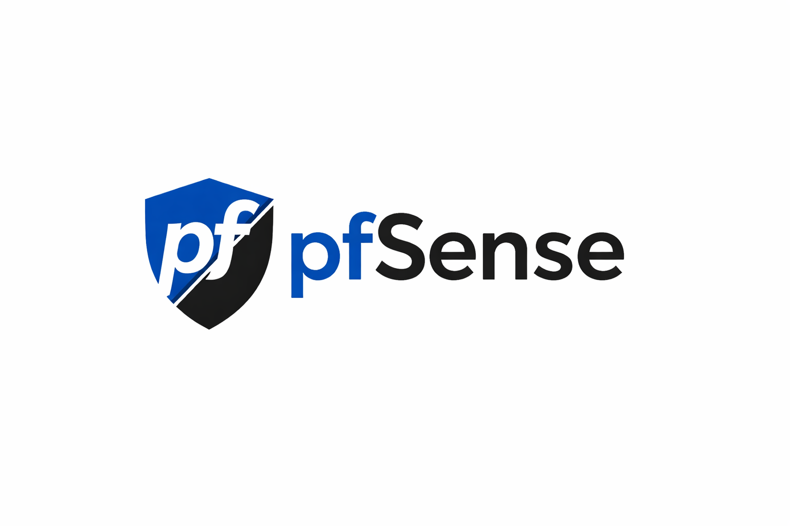

Procédure PfSense
Mise en place d'un pare-feu PfSense, configuration des interfaces WAN/LAN, règles de filtrage NAT et ouverture de ports pour les services web.
Mise en place d'un pare-feu PfSense, configuration des interfaces WAN/LAN, règles de filtrage NAT et ouverture de ports pour les services web.
Installation et configuration d'un serveur de supervision Zabbix. Paramétrage des agents, création de tableaux de bord pour le monitoring des ressources (CPU, RAM, Disque).
Mise en œuvre des Stratégies de Groupe (GPO) pour la gestion centralisée des utilisateurs. Exemple : Mappage automatique de lecteurs réseau et déploiement de fond d'écran.
Installation complète d'un serveur de messagerie Microsoft Exchange. Configuration des connecteurs SMTP, création de boîtes aux lettres et accès OWA.